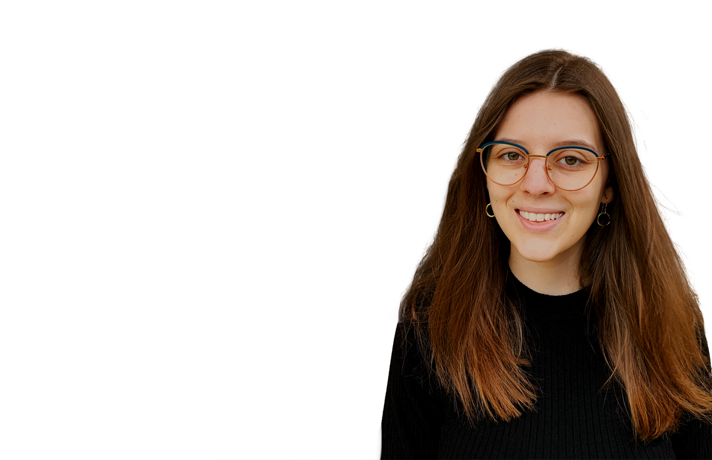

Ich bin eine motivierte, kreative Designerin,
die es liebt zu tüfteln -
im Web, im Print, - für komplette Corporate Designs.
motiviert
aufgeschlossen
kreativ
vielseitig
Portfolio

Grafik- & Kommunikationsdesign
Antonia Groß
Mein Antrieb ist die Neugierde, die Freude an Design-Experimenten und der Wunsch, aus meinem besonderen Talent für vielseitige, breitgefächerte Anfangsideen großartige visuelle Ergebnisse für den Kunden zu erzielen – und zwar in allen Disziplinen der Kommunikation.
Mein Name ist Antonia, ich bin 24 Jahre jung und habe nach meiner abgeschlossenen Ausbildung zur Pferdewirtin auch noch mein zweites Hobby zum Beruf gemacht: meine Kreativität. Die Ausbildung zur Grafik- und Kommunikationsdesignerin habe ich mit ausgezeichnetem Erfolg am zweijährigen Tageskolleg der HTL1 in Linz absolviert.